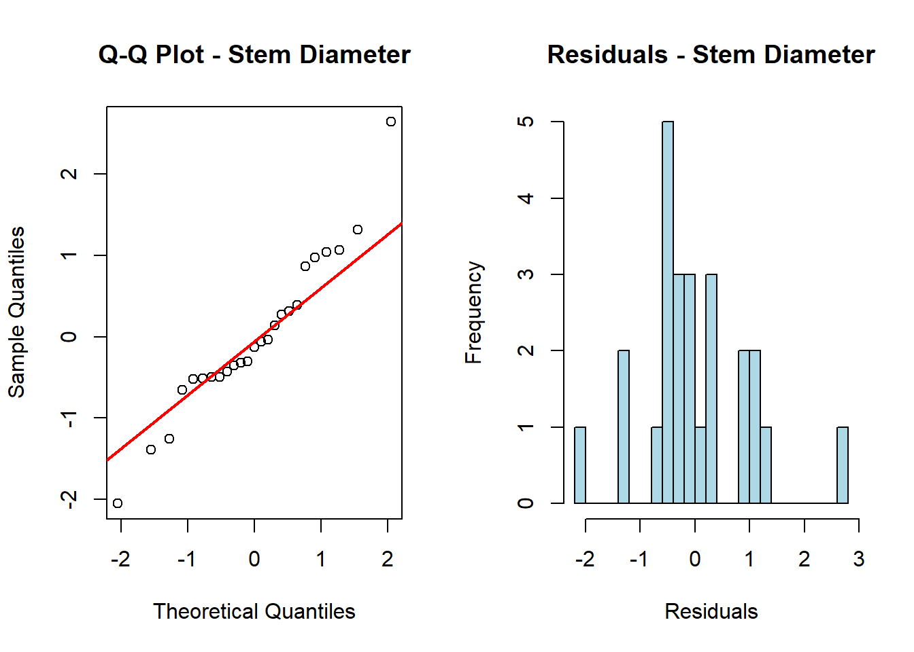
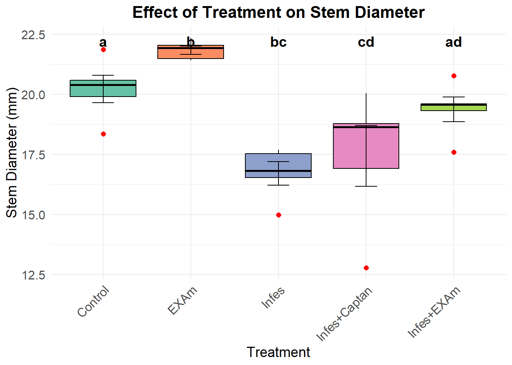
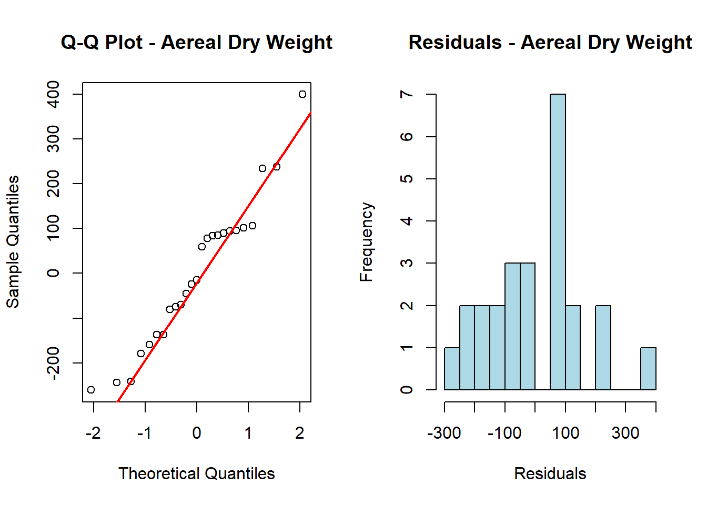
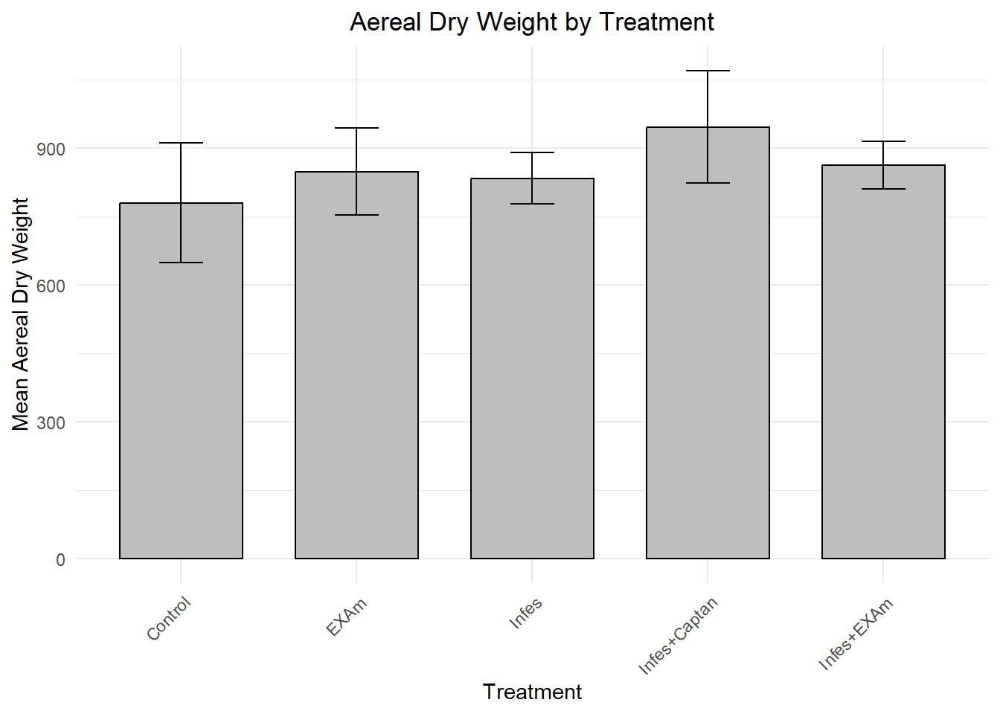
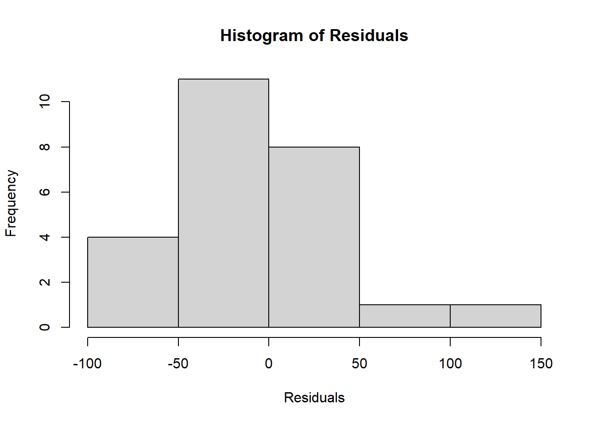
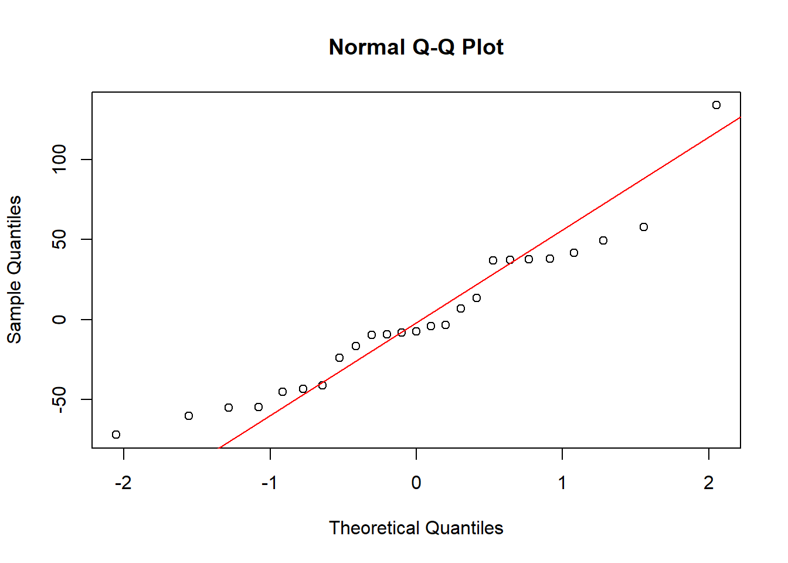
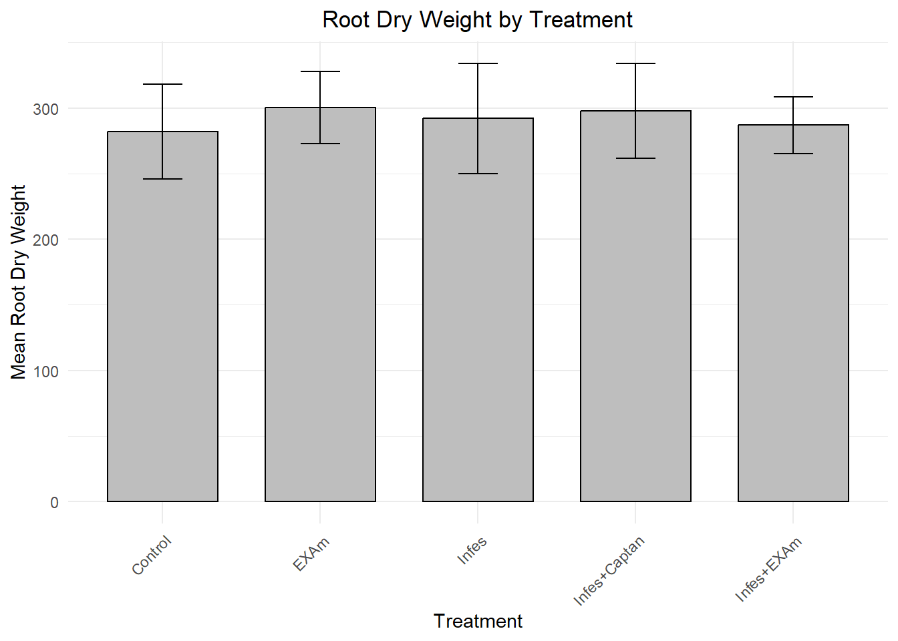

library(ggplot2)
library(readxl)
library(agricolae)
library(multcompView)
library(dplyr)Statistical Analysis of Stem Diameter and Dry Weight (Aerial and Root)
Introduction
This analysis examines three key plant growth parameters:
Stem diameter
Aerial dry weight
Root dry weight
Moreover, the data is divided into five blocks and five treatments as follows:
Treatment 1 : “Control” - Without treatment application (extract or fungicide) and without pathogen inoculation/infestation.
Treatment 2 : “EXAm” - With treatment application (extract or fungicide) but without pathogen inoculation/infestation.
Treatment 3 : “Infes” - Without treatment application (extract or fungicide) but with pathogen inoculation/infestation.
Treatment 4 : “Infes + EXAm” - With treatment application (extract) and pathogen inoculation/infestation.
Treatment 5 : “Infes + Captan” - With treatment application (fungicide) and pathogen inoculation/infestation.
Load the Required Libraries
Call or Import the Data
df <- read_excel("DATA/tomato-clean.xlsx", sheet = "plants")Visualize the Data
knitr::kable(df, caption = "Data of Stem Diameter and Dry Weight (Aerial and Root)")| Treatment | Block | Stem diameter | Aereal dry weight | Root dry weight |
|---|---|---|---|---|
| Control | 1 | 18.35333 | 669 | 182 |
| Control | 2 | 20.57333 | 611 | 274 |
| Control | 3 | 19.89333 | 537 | 227 |
| Control | 4 | 20.39667 | 1275 | 364 |
| Control | 5 | 21.85333 | 811 | 363 |
| EXAm | 1 | 21.91667 | 1135 | 310 |
| EXAm | 2 | 21.41333 | 694 | 237 |
| EXAm | 3 | 21.47667 | 588 | 296 |
| EXAm | 4 | 22.33667 | 931 | 260 |
| EXAm | 5 | 22.03000 | 895 | 398 |
| Infes | 1 | 14.97667 | 805 | 237 |
| Infes | 2 | 17.53333 | 694 | 237 |
| Infes | 3 | 17.68000 | 810 | 247 |
| Infes | 4 | 16.81667 | 823 | 457 |
| Infes | 5 | 16.52667 | 1038 | 282 |
| Infes+EXAm | 1 | 17.59667 | 775 | 251 |
| Infes+EXAm | 2 | 19.60000 | 922 | 221 |
| Infes+EXAm | 3 | 19.31000 | 818 | 325 |
| Infes+EXAm | 4 | 19.57000 | 763 | 304 |
| Infes+EXAm | 5 | 20.76667 | 1038 | 333 |
| Infes+Captan | 1 | 12.79000 | 775 | 251 |
| Infes+Captan | 2 | 18.77667 | 878 | 237 |
| Infes+Captan | 3 | 16.91333 | 810 | 243 |
| Infes+Captan | 4 | 20.04333 | 834 | 334 |
| Infes+Captan | 5 | 18.63333 | 1438 | 424 |
Statistical Analysis
1. Stem Diameter
Analysis of Variance (ANOVA)
stem_aov <- aov(`Stem diameter` ~ Treatment * Block, data = df)
summary(stem_aov) Df Sum Sq Mean Sq F value Pr(>F)
Treatment 4 86.52 21.629 14.325 5.23e-05 ***
Block 1 17.55 17.547 11.621 0.00389 **
Treatment:Block 4 8.57 2.142 1.419 0.27561
Residuals 15 22.65 1.510
---
Signif. codes: 0 '***' 0.001 '**' 0.01 '*' 0.05 '.' 0.1 ' ' 1Interpretation:
Treatments: The treatment factor is highly significant (p = 5.23e-05), indicating that the treatment has a clear and strong effect on the stem diameter. The variability in the response is primarily explained by the treatment, and there are clear differences between the groups.
Blocks: The block factor is also significant (p = 0.00389), suggesting that blocks contribute to explaining the variability in the outcome. This means that grouping observations into blocks has a meaningful impact on the results.
Interaction: The interaction between treatment and block is not significant (p = 0.27561), indicating that the effect of treatments is consistent across blocks. There is no evidence that the treatment effect differs depending on the block.
Normality
res_stem <- residuals(stem_aov)
shapiro.test(res_stem)
Shapiro-Wilk normality test
data: res_stem
W = 0.9572, p-value = 0.3615Interpretation:
Through the Shapiro-Wilk test, the dataset was evaluated if it follows a normal distribution. In this case, the p-value (0.3615) is high, indicating that the test did not find significant deviations from normality. Therefore, the data is normally distributed.
Visualize the behavior of the data
par(mfrow=c(1,2))
qqnorm(res_stem, main = "Q-Q Plot - Stem Diameter")
qqline(res_stem, col = "red", lwd = 2)
hist(res_stem,
main = "Residuals - Stem Diameter",
xlab = "Residuals",
col = "lightblue",
border = "black",
breaks = 20)
Post-Hoc Test Tukey’s HSD
Since there are significant differences on the ANOVA, post-hoc test such as Tukey’s HSD test were performed.
# Perform Tukey HSD post hoc test
tukey_stem <- TukeyHSD(stem_aov, "Treatment")
# Extract p-values from the Tukey HSD test
tukey_pvalues_stem <- tukey_stem$Treatment[, "p adj"]
# Generate significance letters using multcompView
library(multcompView)
tukey_letters_stem <- multcompLetters(tukey_pvalues_stem)$Letters
# Print the significance letters
tukey_letters_stem EXAm Infes Infes+Captan Infes+EXAm Control
"a" "b" "bc" "cd" "ad" Graphics
# Summarize data: Calculate mean, standard deviation, and standard error for each treatment
df_summary <- df %>%
group_by(Treatment) %>%
summarise(
mean_stem_diameter = mean(`Stem diameter`, na.rm = TRUE),
sd_stem_diameter = sd(`Stem diameter`, na.rm = TRUE),
se_stem_diameter = sd_stem_diameter / sqrt(n()), # Standard error
.groups = 'drop'
)
# Add Tukey letters to the summary table
df_summary$letters <- tukey_letters_stem
# Create the boxplot with error bars and Tukey letters
ggplot(df, aes(x = Treatment, y = `Stem diameter`, fill = Treatment)) +
geom_boxplot(outlier.color = "red", outlier.shape = 16, outlier.size = 2, color = "black") +
geom_errorbar(
data = df_summary,
aes(x = Treatment, ymin = mean_stem_diameter - se_stem_diameter, ymax = mean_stem_diameter + se_stem_diameter),
width = 0.25, inherit.aes = FALSE
) +
geom_text(
data = df_summary,
aes(x = Treatment, y = max(mean_stem_diameter + se_stem_diameter) + 0.2, label = letters),
size = 5, fontface = "bold", color = "black", inherit.aes = FALSE
) +
scale_fill_brewer(palette = "Set2") +
labs(
title = "Effect of Treatment on Stem Diameter",
x = "Treatment",
y = "Stem Diameter (mm)"
) +
theme_minimal() +
theme(
plot.title = element_text(size = 16, face = "bold", hjust = 0.5),
axis.title = element_text(size = 14),
axis.text = element_text(size = 12),
axis.text.x = element_text(angle = 45, hjust = 1),
legend.position = "none" # Remove legend
)
Interpretation:
Treatments sharing the same letter are not significantly different.
Control (a): The control has a mean stem diameter of 20 mm and shows no significant difference from other treatments with the same letter.
EXAm (b): The EXAm treatment (extract without pathogen) has the largest stem diameter (~22.5 mm) and differs significantly from “Infes”, “Infes + Captan”, and partially overlaps with “Control” and “Infes + EXAm”.
Infes (bc): The Infes treatment (pathogen alone) has the smallest stem diameter (~17 mm), significantly lower than EXAm.
Infes + Captan (cd): The “Infes + Captan” treatment (fungicide + pathogen) shows moderate stem diameter (~18-19 mm) and overlaps with both “Control” and “EXAm”.
Infes + EXAm (ad): The “Infes + EXAm” treatment (extract + pathogen) has an intermediate stem diameter (~19-20 mm), overlapping with both the Control and Infes + Captan treatments.
2. Aerial Dry Weight
Analysis of Variance (ANOVA)
aerial_aov <- aov(`Aereal dry weight` ~ Treatment* Block, data = df)
summary(aerial_aov) Df Sum Sq Mean Sq F value Pr(>F)
Treatment 4 72740 18185 0.424 0.7890
Block 1 173932 173932 4.056 0.0623 .
Treatment:Block 4 135067 33767 0.787 0.5511
Residuals 15 643290 42886
---
Signif. codes: 0 '***' 0.001 '**' 0.01 '*' 0.05 '.' 0.1 ' ' 1Interpretation:
Treatment (Factor 1): The F-value for the treatment factor is 0.424, with a p-value of 0.789, indicating no significant effect of the different treatments on the response variable.
Block (Factor 2): The block factor shows an F-value of 4.056 and a p-value of 0.0623, which is marginally significant at the 0.1 level, suggesting that blocks may have a small influence on the response variable.
Interaction: The interaction between treatment and block has an F-value of 0.787 and a p-value of 0.5511, indicating no significant interaction between the factors.
Residuals: The residuals have an F-value of 42886, which serves as the baseline for comparison. No significant effects were observed for treatment and interaction terms.
In general, the results indicate that neither treatment nor the interaction between treatment and block significantly affects the outcome.
Normality
resAerealWeight <- residuals(aerial_aov)
shapiro.test(resAerealWeight)
Shapiro-Wilk normality test
data: resAerealWeight
W = 0.956, p-value = 0.3406Interpretation
The Shapiro-Wilk normality test results show a W statistic of 0.956 and a p-value of 0.3406. Since the p-value is greater than the significance level of 0.05, this indicates that the data for Aerial dry weight follows a normal distribution.
Visualize the behavior of the data
par(mfrow=c(1,2))
# Q-Q plot for residuals
qqnorm(resAerealWeight, main = "Q-Q Plot - Aereal Dry Weight")
qqline(resAerealWeight, col = "red", lwd = 2)
# Histogram of residuals
hist(resAerealWeight,
main = "Residuals - Aereal Dry Weight",
xlab = "Residuals",
col = "lightblue",
border = "black",
breaks = 20)
Graphics
# Summarize data: Calculate mean and standard error
df_summary <- df %>%
group_by(Treatment) %>%
summarise(
mean_aereal_dry_weight = mean(`Aereal dry weight`, na.rm = TRUE),
se_aereal_dry_weight = sd(`Aereal dry weight`, na.rm = TRUE) / sqrt(n()), # Standard error
.groups = 'drop'
)
# Plot the bar graph with gray bars and error bars
ggplot(df_summary, aes(x = Treatment, y = mean_aereal_dry_weight)) +
geom_bar(stat = "identity", color = "black", fill = "gray", width = 0.7) + # Gray bars
geom_errorbar(
aes(ymin = mean_aereal_dry_weight - se_aereal_dry_weight, ymax = mean_aereal_dry_weight + se_aereal_dry_weight),
width = 0.25 # Error bar width
) +
labs(
title = "Aereal Dry Weight by Treatment",
x = "Treatment",
y = "Mean Aereal Dry Weight"
) +
theme_minimal() +
theme(
axis.text.x = element_text(angle = 45, hjust = 1), # Rotate x-axis labels for clarity
plot.title = element_text(hjust = 0.5) # Center align title
)
3. Root Dry Weight
Analysis of Variance (ANOVA)
root_aov <- aov(`Root dry weight` ~ Treatment * Block, data = df)
summary(root_aov) Df Sum Sq Mean Sq F value Pr(>F)
Treatment 4 1138 285 0.081 0.98712
Block 1 54516 54516 15.440 0.00134 **
Treatment:Block 4 5210 1303 0.369 0.82706
Residuals 15 52964 3531
---
Signif. codes: 0 '***' 0.001 '**' 0.01 '*' 0.05 '.' 0.1 ' ' 1Interpretation:
Treatment: The p-value for the treatment factor (0.987) is not significant, indicating that the treatments (Control, EXAm, Infes, Infes + EXAm, Infes + Captan) do not significantly affect the outcome.
Block: The p-value for the block factor (0.00134) is significant, suggesting that blocks (possibly environmental or experimental conditions) have a significant effect on the outcome.
Interaction: The p-value for the interaction between treatment and block (0.827) is not significant, indicating that the effects of treatments do not depend on the block.
Normality
resRootWeight <- residuals(root_aov)
shapiro.test(resRootWeight)
Shapiro-Wilk normality test
data: resRootWeight
W = 0.93925, p-value = 0.1422Interpretation:
The Shapiro-Wilk normality test indicates that the data for root weight follows a normal distribution (p-value = 0.1422), as the p-value is greater than 0.05.
Visualize the behavior of the data
hist(resRootWeight, main = "Histogram of Residuals", xlab = "Residuals")
qqnorm(resRootWeight)
qqline(resRootWeight, col = "red")
Graphics
# Summarize data: Calculate mean and standard error
df_summary <- df %>%
group_by(Treatment) %>%
summarise(
mean_root_weight = mean(`Root dry weight`, na.rm = TRUE),
se_root_weight = sd(`Root dry weight`, na.rm = TRUE) / sqrt(n()), # Standard error
.groups = 'drop'
)
# Plot the bar graph with gray bars and error bars
ggplot(df_summary, aes(x = Treatment, y = mean_root_weight)) +
geom_bar(stat = "identity", color = "black", fill = "gray", width = 0.7) + # Gray bars
geom_errorbar(
aes(ymin = mean_root_weight - se_root_weight, ymax = mean_root_weight + se_root_weight),
width = 0.25 # Error bar width
) +
labs(
title = "Root Dry Weight by Treatment",
x = "Treatment",
y = "Mean Root Dry Weight"
) +
theme_minimal() +
theme(
axis.text.x = element_text(angle = 45, hjust = 1), # Rotate x-axis labels for clarity
plot.title = element_text(hjust = 0.5) # Center align title
)